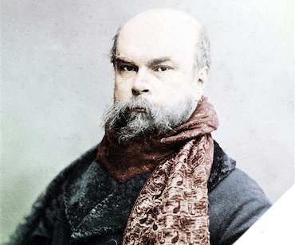

Paul-Verlaine

.Verlaine [1844-1896] được xem như người đi đầu của các nhà thơ hiện đại và kẻ cuối cùng của dòng thơ lãng mạn Pháp. Vừa nữ tính vừa dữ dằn, vừa phàm tục vừa tinh tế, nhạc tính của thơ ông luôn luôn lay động trái tim của các thế hệ trẻ.
Đấy là một bài ca ướt át ban đầu được nghêu ngao giữa các trại lính ở Montpellier, Sète, Béziers, Nimes, và cuối cùng là Metz (các thành phố ở Pháp). Chàng đại úy Nicolas Auguste Verlaine quyết định bỏ quân trang tại đây, không xa kho thuốc súng là bao. Bốn lần mang thai nhưng bà Stéphaine-Eliza đều bị sẩy. Bà cất giữ khá lâu những chiếc bình ngâm các thai nhi trong tinh rượu. Trong gia đình Verlaine, người ta thường hâm nóng những điều quái đản lạ đời.
Và chú bé Paul sẽ còn sống mãi với cái ký ức về các bình thánh thể gớm ghiếc đó. Tuổi trẻ được chiều chuộng, êm đềm và che chở, dòng máu nghệ sĩ sớm mở ra đón nhận những làn gió mới. Cậu bé có cặp mắt kéo dài đến thái dương, đầy giễu cợt. Chiếc miệng với làn môi dưới trề ra báo hiệu một kẻ ăn chơi. Cậu bị chứng mất ngủ và rụng tóc, hói đến tận đỉnh đầu. Rõ ràng là xấu trai ghê gớm rồi.
Vào một chiều xuân đi cùng với bà mẹ, cậu bị kẹt trong một cuộc biểu tình bị đàn áp dữ dội lúc nổ ra cuộc đảo chính của Louis Napoléon (Napoléon đệ tam). Cảnh sát cưỡi ngựa tấn công đám đông. Gạch đá bay tới tấp. Máu đổ. Lên 7 tuổi cậu đã chứng kiến sự kinh hoàng của đám đông.
Thế rồi nổ ra vụ khủng hoảng Rimbaud. Người chồng của Mathilde lại trở thành người tình của Arthur (Rimbaud) mà người ta từng mệnh danh là “Tình trai”, một chuyện ô uế về đời sống gia đình. Ở Paris, London, Bruxelles họ tự quảng cáo, nhậu nhẹt, hút xách, ca hát, những tiếng gào la nối nhau từng tràng. Cuộc chung sống với “nàng Rimbe”, kẻ bị ma ám xuất hiện từ Charleville, chẳng hề là một chức danh nhàn nhã và “chàng trai tuyệt vời” trong bàn tay tên đồ tể đã nhanh chóng gầy mòn đi. Đến một chiều kia trong cơn say, đầu óc cháy bỏng, Paul đã nã súng lục vào Arthur và bị tống giam hai năm…
Sống, trước hết là tự hủy
Dưới tấm mặt nạ của vị thần điền dã, cơ thể của Verlaine cứ rạn nứt ra. Từ nhí nhảnh, tinh quái, cảm quan thơ trở thành sự thẫn thờ buồn bã. Tiếp đó, hầu như không có dự báo, một khúc ca ảm đạm, được chạm khắc công phu, quý phái và đa cảm, đã tế nhị nắm lấy sợi dây của cây đàn luýt. Ở ông có sự giao hòa giữa nữ tính và sự hùng mạnh, sự đối lập giữa lý tính và bản năng để tạo ra một thứ nhạc tính đầy nhục thể của những vần thơ chưa hề có trong thi ca Pháp.
Giống như một Socrate lấm bùn, ông tiến bước, thiên thần lẫn ma quỷ, chó má và linh cẩu, như “kẻ lang thang mệt nhoài với ánh mắt héo hon, tất thảy đầy tràn một sự thèm khát yêu ma”. Với chiếc mũ phớt mềm trên đầu, chiếc khăn quàng xám luôn luôn quấn quanh cổ, chiếc lưng còng chống trên chiếc can, nhà thơ bị vây quanh bởi những chàng trai thời thượng, họ nuốt từng câu từng chữ của ông. Người ta bảo rằng cuộc đời ông dữ dội, đầy tai họa và thất thế. Nhưng bằng thơ, anh chàng Paul tội nghiệp tìm cách lấy lại sự cân bằng cho những hành vi thất sủng của mình, mưu toan làm một cuộc hôn phối không hình dung nổi giữa cái cao đẹp và cái cặn bã. Thật tương phản biết bao giữa sự thô lậu của cuộc sống đang diễn ra, cái khuynh hướng bét nhè của ông, những cuộc tình nhớp nhúa, những lời lẽ tục tĩu với cái duyên dáng, cái trong trẻo rõ ràng và trong suốt như kim cương của thơ ông trong thiên niên kỷ tới.
Ông không có một địa vị chính thức nào, không giàu có, không bạn bè thế lực. Là thứ trang điểm và sự tò mò của cả một thế hệ nhà thơ, ông là vị chúa tể tinh tế duy nhất của lối phản ngữ, tiêm vào nét mơ hồ của tiết tấu, soạn ra những câu thơ 11 chân, thực hành phép thơ liên cú, viết từ thượng vàng đến hạ cám, kể cả những bài “xon-nê” cho những kẻ cho vay nặng lãi vờ vĩnh là các ông chủ bút. Người ta xếp nó vào loại thơ đồi trụy. Thế lại hóa tốt. Tất cả đấy là thứ nghệ thuật tìm đến cái chết một cách đẹp đẽ…
Sau hai chục lần vào bệnh viện ở Paris, ông hấp hối trong căn phòng trọ số 39 phố Descartes. Khu phố Montagne-Sainte-Geneviève lặng lẽ trong lớp sương mù lãng đãng, nhớp nháp, làm mồi cho sự mục nát. Người thầy thuốc lâu năm của ông thừa nhận rằng lục phủ ngũ tạng của ông đã nát bấy. Người ta đếm được 10 thứ bệnh trong người ông: Thấp khớp, xơ gan, viêm dạ dày, hoàng đản, giang mai, đái đường, to tim… Cơ thể ông giống như một từ điển bách khoa bệnh học.
Những ngày cuối đời ông sống với chiếc bút vẽ, tô điểm mọi vật dụng thường nhật. Một tiếng than thở yếu ớt vọng lên trong sự vắng lặng của màn đêm, vang lên từ các tập thơ Amour (Tình yêu), Sagesse (Sự khôn ngoan), Jadis et Naguère (Xưa kia và mới đây) hay Fêtes galantes (Những lễ hội phong tình). Ngày 8/1/1896, vào lúc 7 giờ tối, ông từ giã cuộc đời ở tuổi 52. Hai ngày sau, người ta chở linh cữu ông đến nhà thờ Saint-Etienne-du-Mont làm lễ rửa tội, và tại nghĩa trang Batignolles trên ngôi mộ ông là trận mưa của những lời ai điếu. Tất cả những người lính già lớn bé đều có mặt, run rẩy bước đi trong giá lạnh: Léon Daudet, Raoul Ponchon, Courteline, Heredia, Laurent Tailhade, Jean Richepin, Sully Prudhomme, Catulle Mondès… Người ta khó mà hình dung được sự đụng đầu giữa những khách thượng lưu văn chương đi đưa đám với đội quân của những gái lầu xanh già mặt bự phấn son.
Khúc cầu hồn của Verlaine
Tại nghĩa trang Batignolles, Jules Renard nghe Barrès nói lời vĩnh biệt Verlaine “với những tiếng âm vang của hầm mộ và tiếng quạ kêu”. Tiếp đó đến lượt Coppe “được tán thưởng lúc đầu nhưng lại làm người ta lạnh người đi khi ông giữ chỗ cho mình cạnh Verlaine ở thiên đường”. Ngay hôm sau, Valéry viết cho Gide: “Chúng tôi đã chôn cất Verlaine. Và người ta cũng lợi dụng dịp này nếu có thể. Sau những lời điếu, chúng tôi 15 người ngồi quanh chiếc bàn trong tiệm Clichy và vui đến mức khiến người chết phải hối tiếc về cái chết của họ”.
Ôi Verlaine đáng thương… Những lời đẹp đẽ ấy được rút ra từ một tập sách nhỏ Nấm mồ của Verlaine của Jacques Drillon ra đời vào dịp kỷ niệm 100 năm ngày Verlaine qua đời (10-1-1996). Còn một cuốn sách dày cộp Verlaine, câu chuyện của thân xác của Alain Buisine. Buisine, thay cho một bức ảnh thánh bằng kính màu, đã vẽ ra tác giả của Sagesse như một miêu tả nhân chủng học, không khoan nhượng nhưng cũng không kém dịu dàng.
Một khúc cầu hồn khác cho Verlaine là khúc balade của Guy Goffette, trong đó có câu: “Verlaine: Thật mỏng manh và chói lọi như đóa mào gà trong sương mù”.